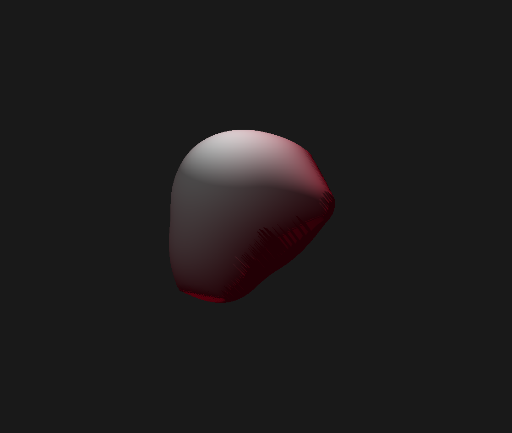
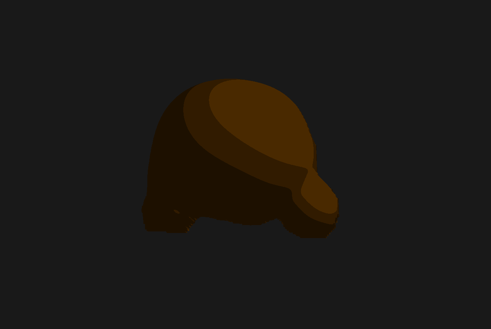
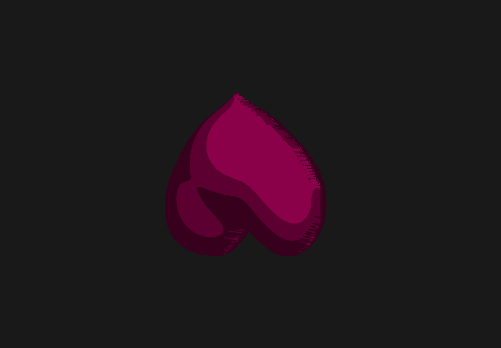
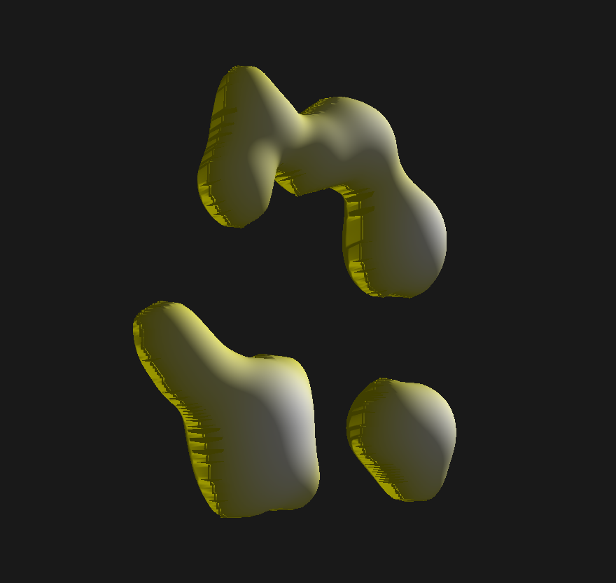
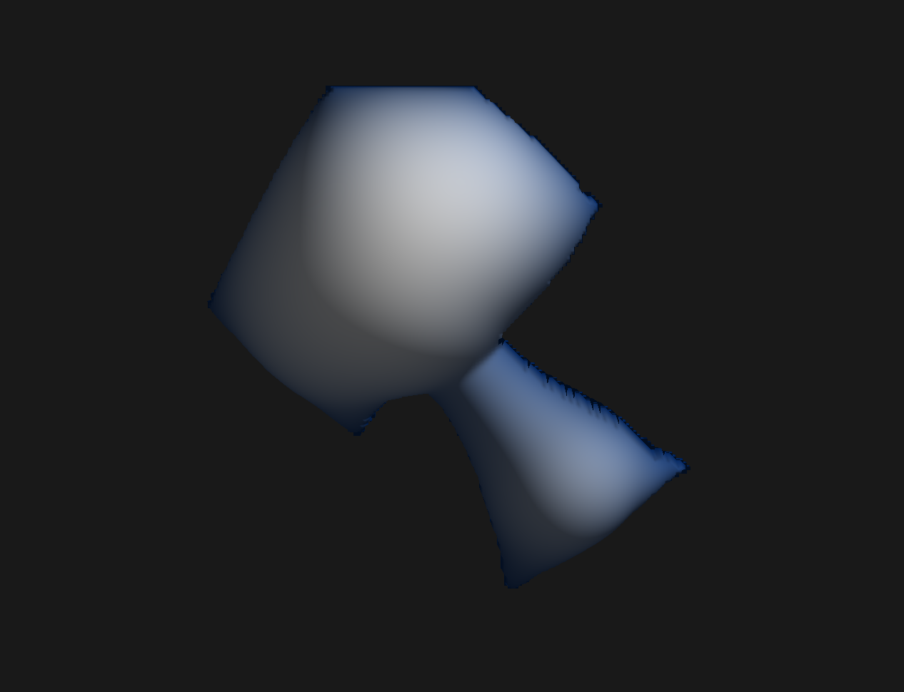

Demo Video: Watch Demo Video ↗
This project implements the Puffball inflation algorithm to convert hand-drawn 2D shapes into 3D models. Our pipeline consists of a Python drawing interface for creating PNG silhouettes, a Puffball implementation computing height values via grassfire distance transforms, and a C++ OpenGL renderer generating double-sided 3D surfaces from the combined PNG and CSV data. The system then produces triangular meshes suitable for shaders and textures.
We began from the Puffball concept paper and a clean-slate implementation (no starter code). Our inputs are hand-drawn binary masks.
Initial prototype. We began with a single point above our contour and connected points along the contour to that apex. While this produced a basic 3D representation, it was not the behavior or surface quality we wanted.
Mask creation (existing tool). We obtain binary silhouette masks using an interactive C++ OpenCV tool from Echo’s prior project.
source*.png, trace a closed shape with the mouse, auto-fill interior to export mask*.png; supports batch processing.generate_mask.h/.cpp (draw mask), main.cpp (iterate source*.png), CMakeLists.txt.cv::fillPoly to fill.s=save next, r=reset, q=quit.Masks created. Examples of binary masks produced by the tool:
Gradient-driven attempt. Next, we tried to implement something like Puffball by taking the gradient of our mask to obtain a contour, sampling points along the contour, and then moving those points in the direction of the gradient in time steps.
Because the gradients were imperfect, as time steps progressed, points became increasingly scattered. This made it difficult to measure when points converged and to robustly identify the medial axis (ridge points).
Our implementation follows the core Puffball algorithm from Twarog et al.[1], which uses grassfire distance transforms to inflate 2D silhouettes into 3D shapes. The original paper defines inflation as the union of spheres placed at interior points, with sphere radii determined by distance to the nearest boundary. We implemented the practical MATLAB-based approach from Box 1 of the paper in Python, computing distance transforms and applying soft-maximum operations to generate height fields.
We compute a grassfire-based accumulation surf inside the mask, extract a height-valued medial axis transform (MAT) from low-gradient regions, and apply a soft union of spheres (softmax) centered on MAT points to obtain the final height field.
surfIteratively erode the binary mask and accumulate into surf to form an interior height map.
import numpy as np
from scipy.ndimage import convolve
fil = np.array([
[0.1218, 0.4123, 0.1218],
[0.4123, 0.9750, 0.4123],
[0.1218, 0.4123, 0.1218]
], dtype=np.float32) / 1.2404
nmask = (mask != 0).astype(np.float32)
surf = np.zeros_like(nmask, dtype=np.float32)
while np.any(nmask > 0):
surf += nmask / 1.67
nmaskpad = np.pad(nmask, 1, mode='edge')
nmaskpad = convolve(nmaskpad, fil, mode='constant', cval=0.0) - 1.4241
nmask = np.clip(nmaskpad[1:-1, 1:-1], 0, 1)
Example surf visualizations:

surfThreshold gradient magnitude and skeletonize to obtain a thin MAT.
from skimage.morphology import skeletonize
dx, dy = np.gradient(surf)
dsurf = np.sqrt(dx**2 + dy**2)
low_grad = (dsurf < 0.958) & (surf > 2)
skel = skeletonize(low_grad)
mat = skel.astype(np.float32) * surf
Medial axis visualizations:

Soft-add spheres of radius r = mat[y,x] at each medial point and take log for a smooth union.
H, W = mask.shape
X, Y = np.meshgrid(np.arange(W), np.arange(H))
h = np.ones((H, W), dtype=np.float32)
yi, xi = np.nonzero(mat)
for y, x in zip(yi, xi):
z2 = mat[y, x]**2 - (X - x)**2 - (Y - y)**2
pm = z2 > 0
h[pm] += np.exp(np.sqrt(z2[pm]))
height = np.log(h).astype(np.float32)
Puffed results:
Most of the algorithmic code was implemented in Python. We export the height field to CSV, then use C++/OpenGL to post-process and render:
Pipeline: CSV (heights) → HeightField → generateHeightfieldMesh() → GPU upload → shaders + camera → glDrawElements
Representative outputs across different shapes. By converting to a triangle mesh, we were able to display shading on our final puffed objects!
| Shape | Mask | Medial | Final Puffed |
|---|---|---|---|
| Strawberry |  | ||
| Bear |  | ||
| Heart |  | ||
| Multiple |  | ||
| Non-differentiable | |
 |
We attempted to implement image-based material transfer using Puffball's surface normals as a smooth, scale-invariant representation of interior point locations. The approach synthesizes textures coarse-to-fine in a Gaussian pyramid, using coordinate images to map target pixels to source locations with similar neighborhoods and shape-relative positions.
The texture mapping didn't work well in practice. Debugging and improving this material transfer algorithm could be an interesting extension to consider in the future!
This project successfully implements the Puffball inflation algorithm for converting 2D silhouettes into 3D models. Our pipeline includes mask creation, height computation via grassfire distance transforms, and double-sided mesh rendering with OpenGL shaders.
Key achievements include robust Python implementation of the core algorithm, effective boundary smoothing, and high-quality triangular mesh generation. The system handles various shape complexities while maintaining smooth, inflated 3D surfaces that preserve the essential characteristics of the original 2D silhouettes.